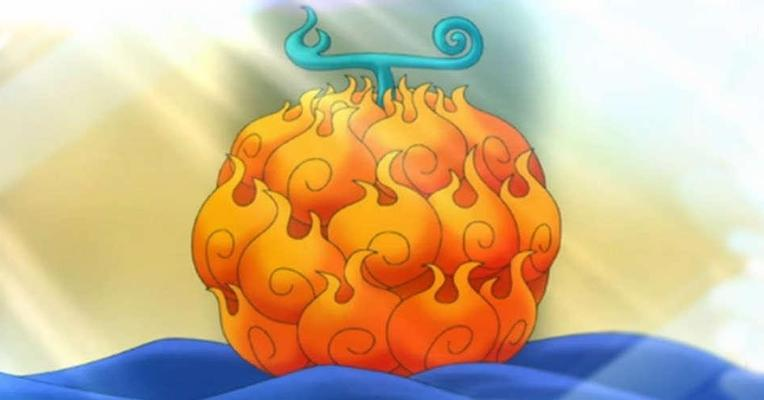
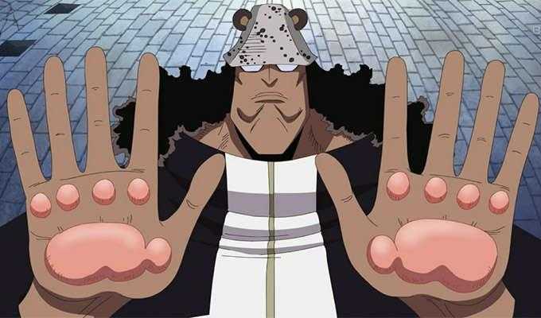
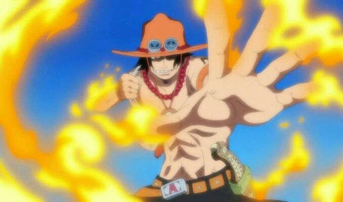
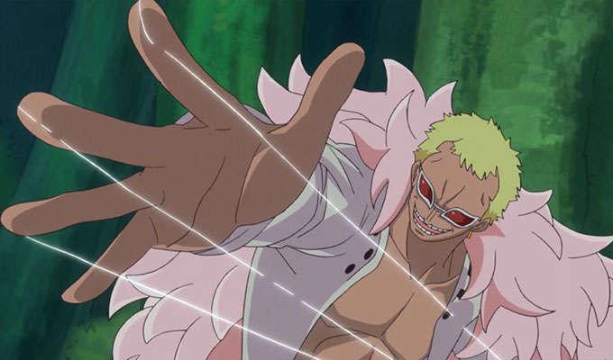
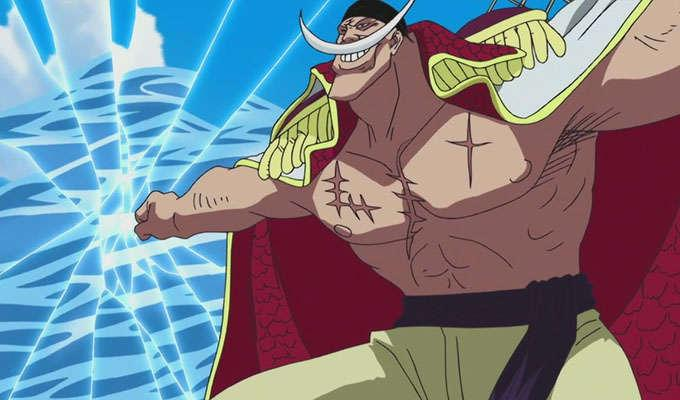

7 Buah Iblis Terkuat dalam One Piece
Semua orang tentu sepakat bahwa buah merupakan makanan yang kaya akan nutrisi. Orang yang memakannya akan mendapatkan asupan gizi sehingga tubuhnya pun sehat. Nah, bagaimana kalau buah yang lo makan enggak cuma membuat lo sehat, tapi juga ngasih lo kekuatan?

Dalam One Piece, ada sebuah buah unik yang bisa ngasih kekuatan dahsyat bagi penyantapnya. Buah ini disebut Devil Fruit alias Buah Iblis. Buah Iblis ini terbagi ke dalam tiga jenis, yaitu Paramecis, Logia, dan Zoan. Sepanjang perjalanan One Piece, pasti lo udah ngelihat berbagai Buah Iblis dengan kekuatan yang berbeda. Makanya, enggak mengherankan kalau Buah Iblis jadi daya tarik tersendiri bagi penggemar One Piece.
Lantas, Buah Iblis mana yang dikategorikan paling kuat dan siapa aja penyantapnya? Yuk, simak penjabarannya
1. Nikyu Nikyu no Mi (Bartholomew Kuma)

Buah Iblis yang dimakan oleh Bartholomew Kuma ini termasuk Buah Iblis terkuat yang bertipe Paramecia. Kekuatan Buah Iblis ini berpotensi bagi pemakannya untuk menolak sesuatu lewat sentuhan telapak tangannya. Dia juga bisa memindahkan benda apa pun yang disentuhnya. Telapak tangan Kuma pun menyerupai cakar beruang akibat buah ini.
Selain menolak dan memindahkan benda, Kuma juga dapat menyusutkan partikel angin menjadi gelembung kejut dengan ledakan yang dahsyat. Teknik ini disebut Ursus Shock (Guncangan Beruang). Dia pernah menggunakan teknik ini di Thriller Bark dan melumpuhkan sebagian besar targetnya.
2. Mera Mera no Mi (Portgas D. Ace)

Dalam bahasa Jepang, mera artinya api. Buah Iblis yang satu ini cukup panjang diceritakan dalam One Piece. Pemakan pertama buah jenis Logia ini adalah Portgas D. Ace. Buah ini juga dimakan oleh Sabo pada Arc Dresserosa.
Buah ini memberikan penggunanya kekuatan untuk menciptakan, memanipulasi, dan mengendalikan api. Kekuatan dari Mera Mera no Mi bisa menghancurkan beberapa kapal besar sekaligus. Ace pernah menggunakannya Arc Albasta.
3. Ope Ope no Mi (Trafalgar D. Water Law)
Buah Iblis terkuat selanjutnya adalah Ope Ope no Mi. Buah Iblis jenis Paramecia ini juga cukup banyak diceritakan dalam One Piece. Kekuatan Buah Iblis ini dimiliki oleh Trafalgar Law. Dengan kekuatan Buah Iblis ini, Law bisa menciptakan ruangan yang dapat dikontrolnya secara penuh, mulai dari orientasi objek seperti penempatan objek hingga memodifikasi tubuh manusia yang ada di dalam ruangan tersebut.
Katanya, buah ini bisa membuat si pemakannya melakukan operasi dan menyembuhkan berbagai penyakit, tanpa merusak bagian tubuh. Makanya, buah iblis pernah dihargai sangat mahal oleh pihak Marine. Bayangin aja, sampai 5 triliun Berry!
4. Doku Doku no Mi (Magellan)
Doku Doku no Mi adalah salah satu Buah Iblis terkuat dari jenis Paramecia. Buah ini bisa memberikan si pemakannya kemampuan untuk menciptakan dan mengendalikan berbagai jenis racun.
Magellan memakan buah ini dan mendapatkan kekuatan dahsyat. Saking kuatnya, Doku Doku no Mi bisa melumpuhkan kru bajak Laut Kurohige (Blackbeard) dengan sekali serang aja, loh. Kekuatan ini diperlihatkan saat Magellan melawan Kurohige.
5. Magu Magu no Mi (Sakazuki/Akainu)

Siapa bilang Buah Iblis hanya digunakan oleh bajak laut? Anggota Marine pun ada yang memilki kekuatan Buah Iblis. Yap, Magu Magu no Mi bertipe Logia ini dimiliki oleh sang ketua Marine Laksamana Armada Akainu.
Dengan kekuatan Buah Iblis ini, Akainu bisa menciptakan, memanipulasi, dan berubah menjadi magma. Kekuatan Akainu ini bisa menghancurkan targetnya dengan sekali serang. Ini terlihat saat dia menggunakan teknik bernama Volcano Meteor ketika perang besar di Marineford dan menghancurkan kapal Moby Dick miliki Yonkou Shirohige.
6. Ito Ito no Mi (Donquixote Doflamingo)

Kekuatan buah Ito Ito no Mi dimiliki oleh Donquixote Doflamingo yang membuatnya bisa menciptakan dan memanipulasi benang. Bukan benang biasa buat menjahit, loh. Benang-benang tersebut sangat tajam dan bisa memotong tubuh manusia.
Tokoh paling bengis ini sering menggunakan kekuatannya untuk menggerakkan orang lain, layaknya menjadikannya boneka. Dikatakan kuat karena Doflamingo membuat sangkar burung pada saat Arc Dresserosa agar musuhnya enggak bisa melarikan diri.
7. Gura Gura no Mi (Shirohige)

Gura Gura no Mi adalah Buah Iblis yang memiliki kekuatan paling dahsyat dalam tipe Paramecia. Buah ini dimakan oleh bajak laut Whitebeard yang kita kenal dengan nama Shirohige.
Saking kuatnya kemampuan buah ini, penyantapnya bisa menciptakan gempa dengan sekali pukul aja. Hal ini terlihat saat Shirohige datang ke Marineford. Dia membuat Sengoku ketakutan dan membuat markas Marineford hancur dengan satu pukulan aja.